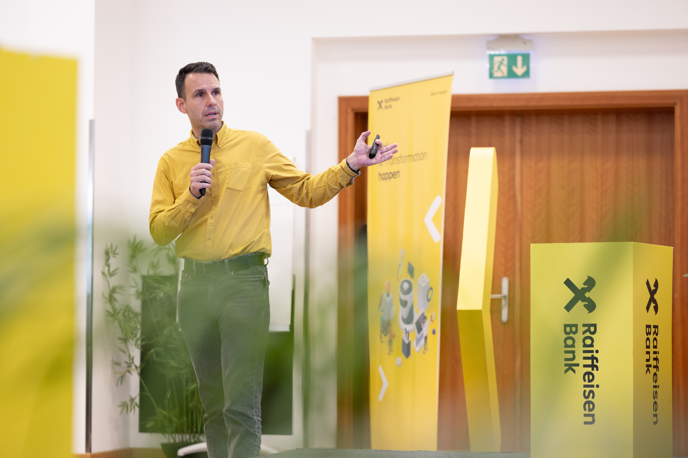

Leads the AI Center of Excellence at Raiffeisen Bank International and serves as AI strategy advisor to the Board of Management through the Group AI Committee (AICO) — responsible for Group-wide AI strategy, governance, and capability-building across Head Office and Network Units in CEE. Led the Group Data Science Academy to 500+ practitioners trained per year, scaled the AI Pioneers adoption network to 1,000+ employees across the Group, and established the AI governance framework for EU AI Act compliance and use-case oversight. Grounded in thirty years of parallel research and academic practice — PhD in Information Science; post-doctoral fellowships at Columbia University, the University of South Wales, and the Austrian Academy of Sciences; 186+ publications across AI, law, digital humanities, and public health — bringing scientific rigour to strategic decisions at institutional scale.

A multidisciplinary practitioner bridging research, engineering, and strategy across information science, artificial intelligence, machine learning, and natural language processing.
Hover bars for role details · Hover org name for all roles at that organization
Formal education spanning three countries, from electrical engineering to information science and computer science.
Selected publications across AI, NLP, information science, and digital humanities. Full list on Lattes CV and Google Scholar.
Selected highlights from 186+ publications indexed on ORCID spanning journal articles, conference papers, and book chapters. Full list also on Lattes CV and Google Scholar.
Research initiatives, applied projects, and institutional programmes across career.
Courses taught at graduate and undergraduate levels across three countries.
Professional associations, boards, awards, editorial service, and selected consulting engagements.